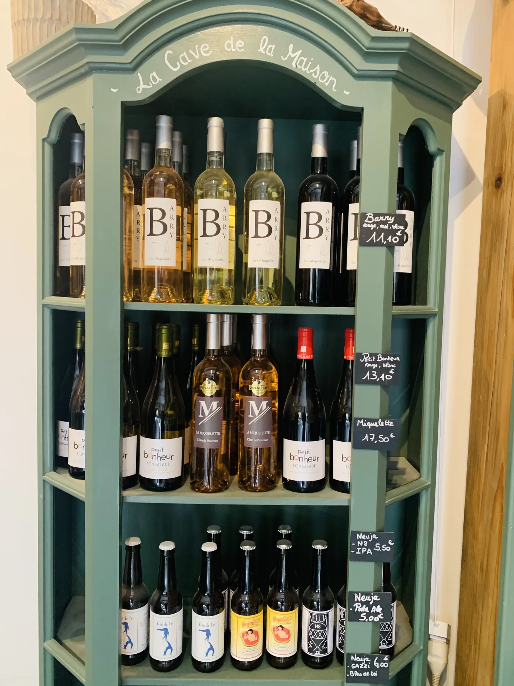
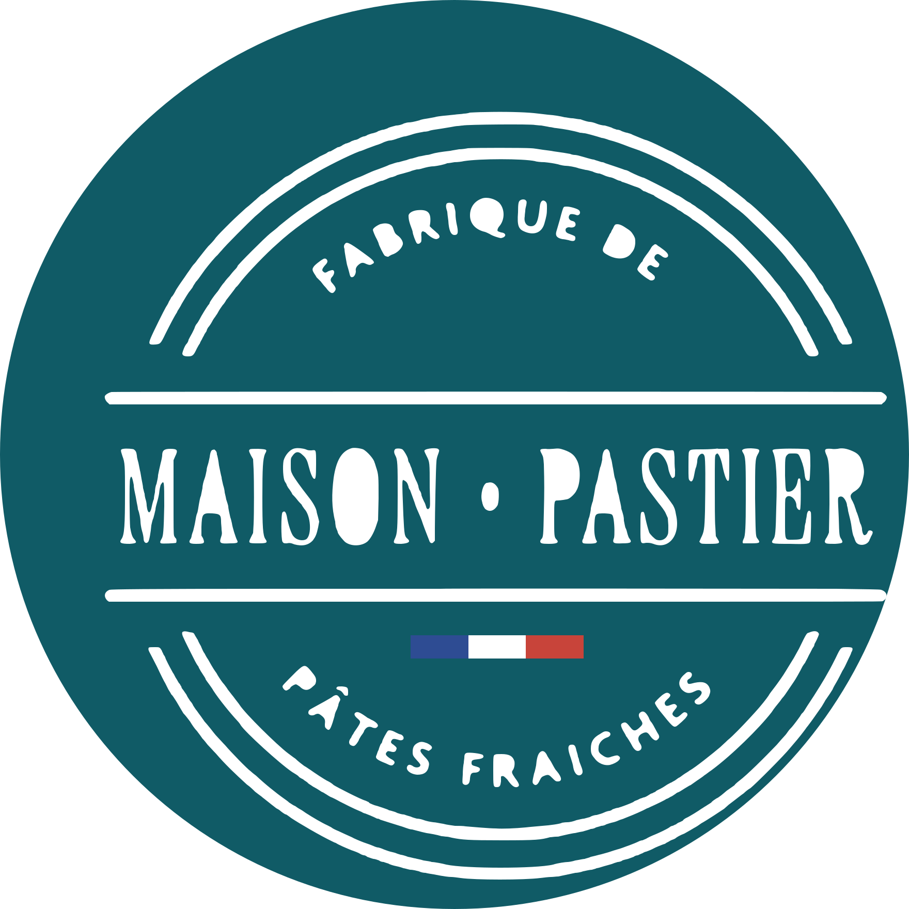

Contact& commandes
Une question, une commande, un conseil pour accorder un vin à vos raviolis ? Appelez-nous, écrivez-nous ou passez directement à la boutique.

Téléphone
Commandes, questions, disponibilités du jour.
06 64 97 42 82Adresse
54 rue République
83140 Six-Fours-les-Plages
Horaires
Mar – Sam : 8h30 – 13h · 16h30 – 19h
Dimanche : 8h30 – 13h · Lundi : fermé
Réseaux
Nouveautés et ravioli du terroir du moment.
Écrivez-nous
Un message, une question ?
Votre message s’ouvre dans l’application SMS de votre téléphone, prêt à être envoyé à la boutique. Pour commander une box, utilisez plutôt notre composeur de box.
Horaires d’ouverture
Horaires| Mardi | 8h30 – 13h00 · 16h30 – 19h00 |
|---|---|
| Mercredi | 8h30 – 13h00 · 16h30 – 19h00 |
| Jeudi | 8h30 – 13h00 · 16h30 – 19h00 |
| Vendredi | 8h30 – 13h00 · 16h30 – 19h00 |
| Samedi | 8h30 – 13h00 · 16h30 – 19h00 |
| Dimanche | 8h30 – 13h00 |
| Lundi | Fermé |
Accès
En plein centre de Six-Fours
Au 54 rue République, 83140 Six-Fours-les-Plages.
Cliquer pour explorer

Maison PastierItinéraire depuis ma position →